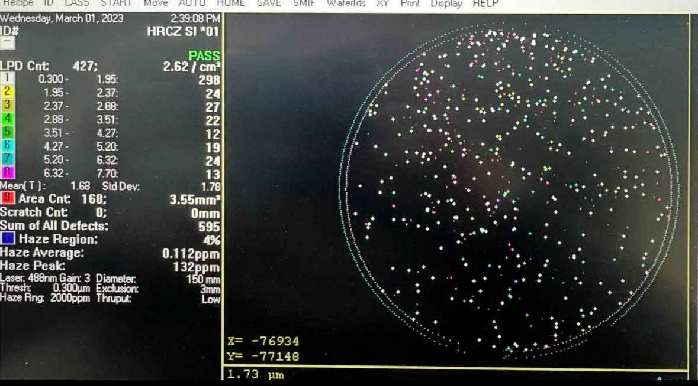

02/2023 – 03/2024
Responsable IT et Data
Soitec
Réalisation
Data :
- **Fine tuning** d’un **modèle d’IA** de détection et classification de défauts sur wafers.
- Reconstruction complète de la **base de données** (~300 tables).
- Développement de **pipelines de données** sur **AWS**.
Développement :
- Création **from scratch** d’une **application d’uptime** des machines de production et outils de mesure.
- Création **d’une application de visualisation** des wafers à l’échelle **nanométrique**.
- Amélioration des **systèmes MES** (*WTS/EOS*) en **optimisant les workflows** sur Igor.
Infrastructure :
- Création, gestion et allocation des **machines virtuelles** avec **VMware**.
- Backup des **serveurs et NAS** sur **AWS**.
Sécurité :
- Cryptage des **serveurs, NAS et PC** de centaines d’ordinateurs.
- Mise en place de **badges, caméras de sécurité** et d’un **logiciel de surveillance**.
- Restructuration des **règles du firewall**.
Network :
- Restructuration des plages **IP statiques et dynamiques**.
- Réorganisation complète des **serveurs et switches réseau**.
- Surveillance et **gestion du trafic réseau**.
Support :
- Support technique **quotidien** aux ingénieurs et techniciens.
- Ajustement d’une **solution de ticketing** pour gérer les demandes.
- Formateur pour les collaborateurs.
Méthodologie & Environnement
Méthodologie : Stand-up meetings **quotidiens**, réunions périodiques pour suivi projet et discussion stratégique, participation aux réunions sur la stratégie globale de Soitec Belgium.
Galerie
